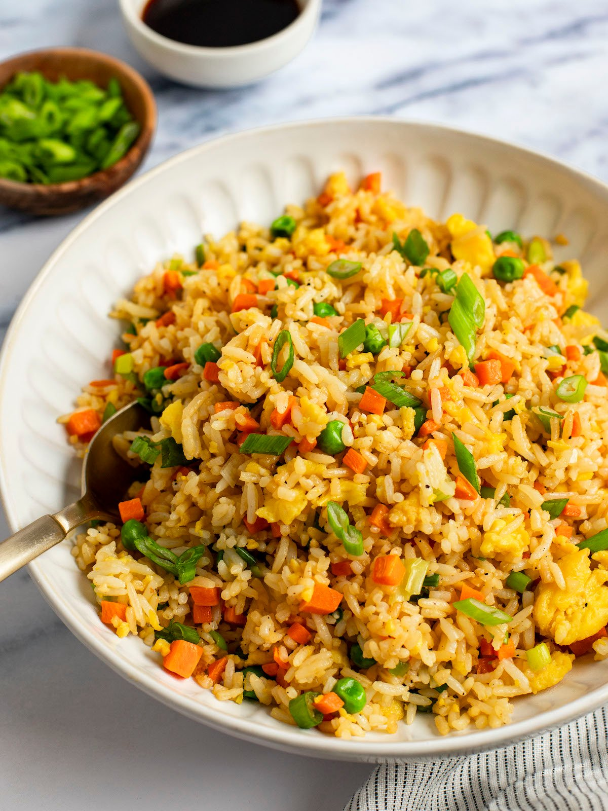

Fried Rice
Home

About Fried Rice
Fried rice is a versatile and delicious dish that originated in Asia and has become popular worldwide. It is made by stir-frying cooked rice with a variety of ingredients such as vegetables, eggs, and proteins like chicken or shrimp.
This dish is a great way to use up leftover rice and can be customized with your favorite flavors and ingredients. Whether served as a main course or a side dish, fried rice is a quick and satisfying meal.
Ingredients
- 2 cups of cooked rice
- 2 tablespoons of soy sauce
- 1 tablespoon of sesame oil
- 1 cup of mixed vegetables (carrots, peas, etc.)
- 2 eggs
- 1/2 cup of diced chicken or shrimp (optional)
- 2 cloves of garlic, minced
- Salt and pepper to taste
Instructions
- Heat sesame oil in a large pan or wok over medium heat.
- Add garlic and stir-fry for 1 minute.
- Add mixed vegetables and cook until tender.
- Push the vegetables to one side of the pan and scramble the eggs on the other side.
- Add the cooked rice and mix everything together.
- Pour soy sauce over the mixture and stir well.
- Add chicken or shrimp if desired, and cook until heated through.
- Season with salt and pepper to taste. Serve hot.